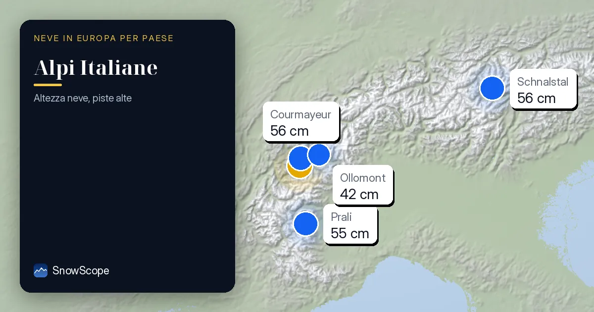
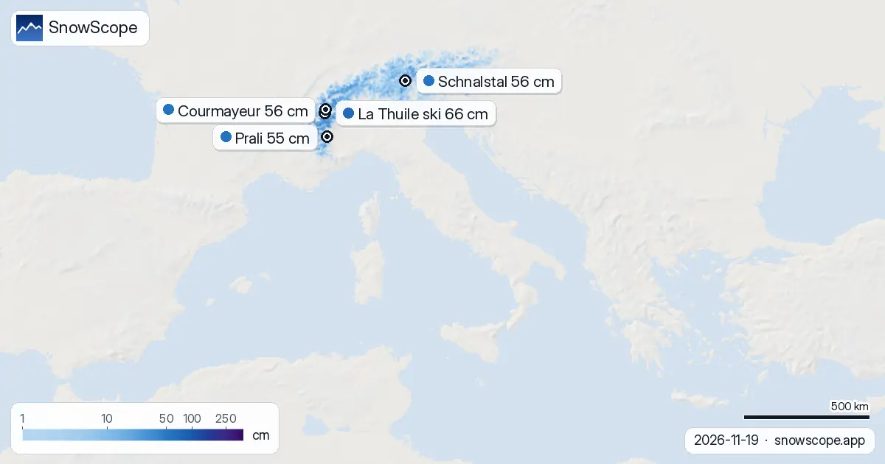
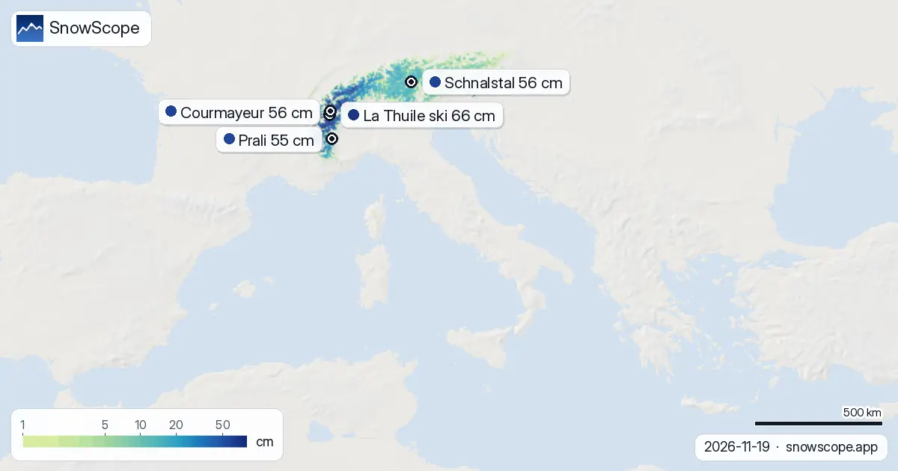

Alpi Italiane: 215 cm di neve in Valle d'Aosta questa settimana
Un forte sistema di perturbazione ha portato neve abbondante sulle montagne alte d'Italia negli ultimi tre giorni. La Valle d'Aosta è stata la vincitrice indiscussa con 215 cm di neve fresca, mentre le Alpi Piemontesi hanno accumulato 76 cm.
Le previsioni neve in tempo reale per La Thuile ski nell'app SnowScopeAltezza neve, allerte powder e mappa 3D, gratis.
Dove è caduta la neve
La perturbazione ha favorito i rilievi occidentali. La Valle d'Aosta, che si estende al confine tra la Francia e l'Italia, ha registrato i dati più importanti: 215 cm di neve fresca in 72 ore. Questa è la cifra di spicco per la regione. Le Alpi Piemontesi, a sud e a est, hanno ricevuto 76 cm nello stesso periodo—un accumulo solido, ma meno della metà di quanto caduto più a ovest.
L'altitudine ha contato molto. Sopra i 2500 m su tutta l'Italia, il modello mostra una profondità media di 26 cm. Tra i 2000 e i 2500 m, le profondità medie sono di 9 cm e coprono il 94 per cento del terreno. Sotto i 1500 m, la copertura nevosa è frammentaria o assente; il limite della neve si situa a 1500 m oggi.
| Località | Altezza neve | Neve fresca, 72 h | In arrivo, prossimi giorni | Quota max |
|---|---|---|---|---|
| La Thuile ski | 66 cm | 102 cm | 82 cm | 2.608 m |
| Courmayeur | 56 cm | 98 cm | 87 cm | 2.749 m |
| Schnalstal | 56 cm | 15 cm | 12 cm | 3.200 m |
| Prali | 55 cm | 44 cm | 20 cm | – |
| Ollomont | 42 cm | 84 cm | 65 cm | – |

Tre giorni di forti nevicate
La copertura nevosa italiana è salita da 20.420 km2 ieri a 24.860 km2 oggi—un guadagno di 4440 km2 in un giorno. Questo aumento riflette la neve fresca su un'ampia area. Circa 19.620 km2 hanno ricevuto almeno 5 cm di neve fresca negli ultimi 72 ore.
La caduta singola più abbondante è stata di 27 cm nelle ultime 24 ore. Calcolata su tre giorni, parti del nordovest hanno visto fino a 59 cm. Questi sono stime del modello per una regione, non misurazioni stazione da un singolo punto.

Quali stazioni guidano
La Thuile ski (quota massima 2608 m) ha il manto più profondo: 66 cm misurati al suolo. Ha anche accumulato più neve fresca vicino a una stazione sciistica: 102 cm in 72 ore. Courmayeur (2749 m) è poco distante, con 56 cm di profondità e 98 cm di neve fresca.
Entrambe le stazioni si trovano in Valle d'Aosta, la zona che ha subito il colpo principale della perturbazione. Ollomont (84 cm di neve fresca in 72 ore) e Prali (44 cm di neve fresca) ne hanno approfittato, anche se con minor profondità totale. Schnalstal (la stazione glaciale dell'Alto Adige) ha ricevuto solo 15 cm di neve fresca—si trova ad est della traccia principale di neve.
Cosa viene dopo
La perturbazione non è finita. Il modello prevede altri 58 cm di neve fresca su tutta l'Italia nei prossimi tre giorni, con un picco di 34 cm il 22 novembre. Questo aggiungerà significativamente alla base. Entro la fine della prossima settimana, l'Italia potrebbe vedere 84 cm in più—anche le Alpi Piemontesi riceveranno cadute più abbondanti più avanti nella finestra di previsione.
La prima neve fresca da metà novembre arriva stasera (20 novembre). Le previsioni possono cambiare, quindi controlla gli aggiornamenti. La neve di inizio stagione su una base sottile può nascondere i sassi, quindi la cautela è consigliata sui terreni fuori pista.
La copertura nevosa cresce
Prima di questa perturbazione, l'Italia aveva 21.950 km2 di neve sette giorni fa. Oggi ne ha 24.860 km2—un guadagno netto nonostante qualche fusione a basse quote. La quota bianca dell'area mappata è ora del 27 per cento, in aumento rispetto ai recenti minimi. La maggior parte della nuova copertura è sopra i 1500 m, dove rimarrà.
Come si confronta
La Thuile ski e Courmayeur sono entrambe ben al di sopra della loro media tipica di metà novembre. La Thuile si attesta al 219 per cento della norma per questa data; Courmayeur al 295 per cento. Questa è una forza inusuale per metà novembre nelle Alpi. Il leader dell'Austria, Stubaier Gletscher, ha 74 cm; il Glacier 3000 della Svizzera ha 60 cm—entrambi ben forniti ma dietro i due migliori dell'Italia. Usa l'app SnowScope per tracciare la profondità della neve, la neve fresca e le previsioni per la tua stazione scelta.
Consigli per sciatori
- Punta su quote sopra i 2000 m in Valle d'Aosta e Alpi Piemontesi per la neve migliore e più stabile nei prossimi giorni.
- La Thuile ski e Courmayeur continueranno a ricevere neve abbondante fino al 22 novembre; la finestra di previsione è di 3–7 giorni.
- Sotto i 1500 m, la copertura nevosa rimane sottile o assente. Controlla l'app per le profondità esatte alla tua stazione e sui pendii scelti.
- Gli sciatori fuori pista dovrebbero consultare il bollettino ufficiale di valanga prima di avventurarsi su terreni non marcati; il consolidamento di inizio stagione è ancora in corso.
- La perturbazione di 72 ore ha azzerato la stagione nel nordovest; controlla i rapporti locali della stazione per confermare le aperture degli impianti e la disponibilità del terreno.
Su questi numeri
Le altezze neve delle località sono la neve più alta sui pendii superiori secondo il modello neve di SnowScope (circa 1 km, calcolo del 19 novembre); sono stime per un'area, non una misura in un punto. I valori delle stazioni sono misure alla data indicata. Le previsioni possono cambiare. Leggi sempre il bollettino valanghe ufficiale prima del fuoripista.
Cita questo articolo
Per ricerca, didattica o stampa: numeri e grafici sono liberamente riutilizzabili con licenza CC BY 4.0 citando così.
SnowScope (2026), Alpi Italiane: 215 cm di neve in Valle d'Aosta questa settimana, https://snowscope.app/blog/it/2026/11/italy-where-the-snow-fell-19-november-2026.html, consultato il 2026-11-19
SnowScope (Atlas Labs). (2026, November 19). Alpi Italiane: 215 cm di neve in Valle d'Aosta questa settimana. SnowScope snow reports. https://snowscope.app/blog/it/2026/11/italy-where-the-snow-fell-19-november-2026.html
BibTeX
@misc{snowscope2026italywherethesnowfell19n,
author = {{SnowScope (Atlas Labs)}},
title = {Alpi Italiane: 215 cm di neve in Valle d'Aosta questa settimana},
year = {2026},
month = nov,
howpublished = {\url{https://snowscope.app/blog/it/2026/11/italy-where-the-snow-fell-19-november-2026.html}},
note = {Published 2026-11-19 11:54 UTC; accessed 2026-11-19}
}· CC BY 4.0 · Metodi, dati e strumenti →
La Thuile ski: neve e temperatura per quota, quest'inverno vs lo scorso (strumenti) →
Segui La Thuile ski
Gratis: un messaggio quando arriva la neve e il meteo ogni mattina.